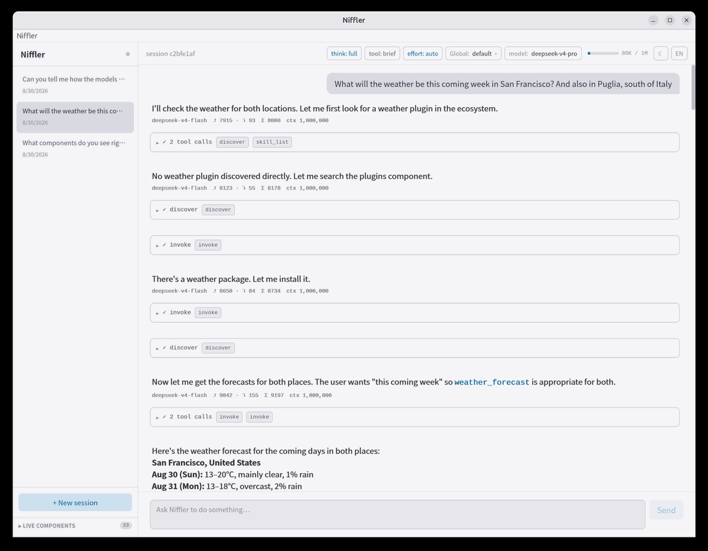
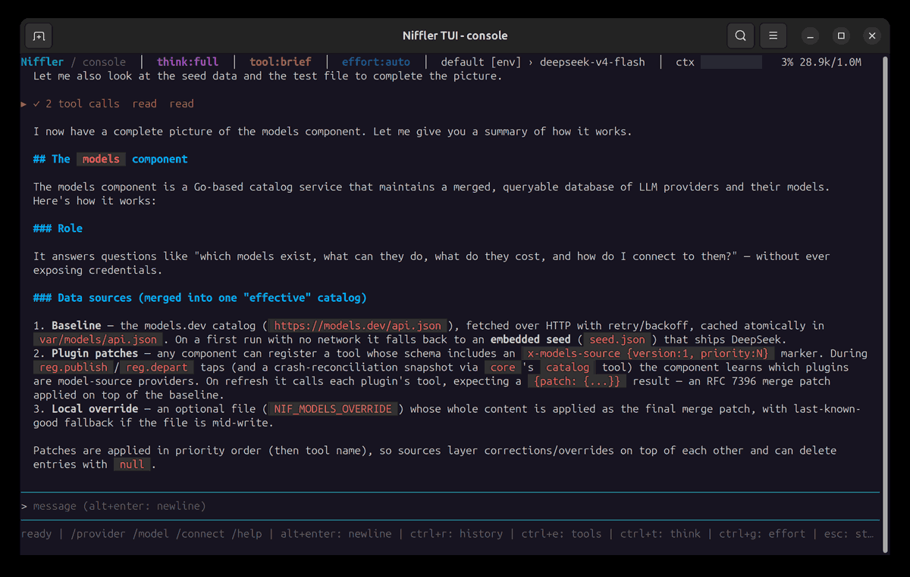

01 processes, not plugins
No dlopen, no ABI borders, no image rot. A component is a process —
teardown is exit(), and the OS is the perfect disposer.
A component crash does not take core or its peers down.
Niffler is an extremely modular, self-extending agent harness. Components are processes in any language, the bus is NATS, and the agent writes, compiles and spawns its own tools while you talk to it.


./var/bin/niffler in a terminal is the admin shell — help/status/catalog/tools/sessions, no chat. Conversations live in niffler-ui and niffler-tui; scripting goes through ./var/bin/cli.
$ make && ui/build/bin/niffler-ui
build core + components + desktop UI · the UI autostarts the harness
→ spawning nats-server on 127.0.0.1:4222
→ core listening on svc.core.call
→ catalog: store, bash, builder, plugins, skills, systemprompt, fetch, models, provider, llm, grep, edit, git, observe, logfile, agent, expert, fabric
$ ▌
that terminal is the admin shell (no chat) — conversations live in niffler-ui and niffler-tui
No dlopen, no ABI borders, no image rot. A component is a process —
teardown is exit(), and the OS is the perfect disposer.
A component crash does not take core or its peers down.
Core speaks exactly one wire format: JSON envelopes over NATS.
The codec is ~200 lines and pure std/json — SDKs in Nim,
Go, TypeScript, or whatever you port next.
The agent writes source → calls builder.build → calls
core.spawn → the tool is live. Adding a capability is a
tool call, and the LLM does it to itself mid-conversation. Community
packages install the same way: plugin_install clones,
compiles from source and spawns — approval-gated, always built from
the published code. fabric goes further: the LLM programs
whole control flows in an embedded Nim VM.
Capabilities survive restarts: spawned components are recorded in the
store and restored on boot. The repo holds the reproducible source;
var/bin/ can be rebuilt, while var/barrel-db
holds persistent state.
one conversation = one process: the system spawns a
var/bin/session <id> runner per conversation — kill a
runner, every other session keeps going.
every box is a small binary using its language's component SDK —
peers, isolated, individually killable.
comp.tool:
proc weather(city: string): JsonNode =
## Current weather for a city
## - city: the city name
builder.build {
lang: "nim",
source: ... }
core.spawn {
name: "weather",
binary: ... }
{"tool": "weather",
"args": {"city": "Berlin"}}
10 sympy instances, one-shot, graded by the official
swebench 4.1.0 Docker harness — niffler, pi and opencode
side by side over two models. Niffler resolves comparable counts at
2.3–2.9× less total tokens per task. Full report:
bench/reports/swe-sympy10-pilot-report.md.
A harness-comparison framework with five red-at-base tasks verified green by reference implementations, per-turn feedback loops, protected-file guards and provider token accounting — niffler / pi / opencode × two models, plus a paired niffler-expert variant that measures the advisory peer.
$ git clone git@github.com:gokr/niffler.git && cd niffler
$ make setup # prerequisites (Ubuntu / macOS)
$ make # build core + components + desktop UI, once
$ ui/build/bin/niffler-ui # the desktop UI — autostarts the harness
$ make ui-install # optional: puts niffler-ui on PATH + launcher/app icon (Linux)
$ make test # bus-contract suite — 30 contract tests + smoke + go tests
│
└─ make run / recover / down / dev · see docs/MANUAL.md
all Nim deps come from nimble — yaml, htmlparser, natswrapper, bitbarrel — installed automatically on first build.
{
"v": 1,
"id": "01J…",
"op": "call",
"svc": "bash",
"tool": "exec",
"args": { "cmd": "uname -a" },
"meta": { "sessionId": "s-01J…" }
}
core → svc.core.call, components → svc.<name>.call,
events on ev.*. that's the whole bus contract.
spec: docs/WIRE.md · rationale: docs/research/REBOOT.md